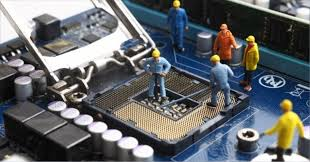
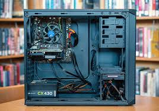
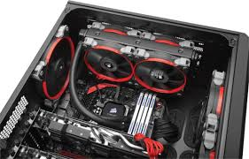
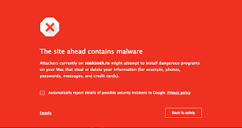

| Mantenimientos | Descripcion | Referencia | Precio |
| Mantenimiento preventivo sencillo | Este mantenimiento es ideal si tu PC siempre recibe mantenimientos en los tiempos adecuados, se trata de limpiar el exterior de tu PC o laptop, cambio de pasta termica, limpieza de tus componentes y limpieza de teclado si es que se permite. | El precio es de $1450 MX con IVA incluido. | |
| Mantenimiento preventivo completo | Este mantenimiento es ideal si tu PC no ha recibido mantenimientos durante mucho tiempo o en los tiempos establecidos por el fabricante. Se trata de limpieza exterior de tu PC o laptop, cambio de pasta termica, limpieza de tus componentes, limpieza del teclado, chequeo de software, y deteccion de fallos ya sea de software o hardware. |  | El precio es de $2075 MX con IVA incluido. |
| Matenimiento correctivo | Este mantenimiento solamente se hace si tu PC o laptop presenta algun fallos ya sea de software o hardware, despues de que tu computadora se arregle, se le dara un mantenimiento completo. |  | El precio varia segun las refacciones que se necesiten o dependiendo del fallo. |
Algunos tips para mantener tu computadora en buen estado son:
-No tapar las salidas de aire de tu PC, si es laptop, evita colocarla en lugares suaves y blandos.

-Nunca tengas liquidos cerca de tu computadora, evita malos momentos.
-instala solamente software seguro y original.
-Descarga las actualizaciones de Windows o Mac.
-Trabaja con un buen antivirus, seguro y original.
-No accedas a paginas desconocidas ni descargues nada que se vea anormal.

Para ordenar algun mantenimiento nuestros contactos son:
-Whatsapp: +52 812-369-8246
-Facebook: I Can Fix It MX
-Correo: I-Can-Fix-It@hotmail.com
-Horario: Lunes a Viernes de 10:00 PM a 7:00 PM
Sabado de 10:00 PM a 2:00 PM
Domingos: Cerrado.